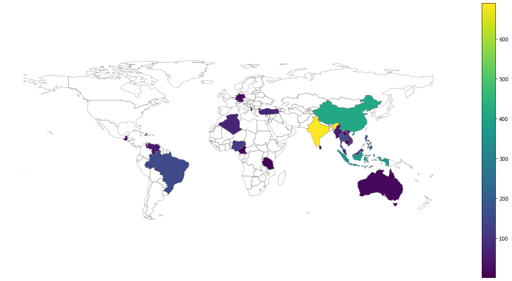

Week 5: Plastic sites and spatial aggregation
Week 5: Plastic sites and spatial aggregation#
The objective of today’s lecture is to practice, once again, the access and analysis of spatial data from HTTP requests.
import geopandas
import matplotlib.pyplot as plt
import warnings
warnings.filterwarnings("ignore")
gdf = geopandas.read_file("https://api.dev.plastic.watch.earthrise.media/sites")
gdf = geopandas.read_file("https://api.dev.plastic.watch.earthrise.media/sites?limit=3000")
world = geopandas.read_file(geopandas.datasets.get_path('naturalearth_lowres'))
world = world[world.continent != "Antarctica"]
fig, ax = plt.subplots(figsize=(20,10))
world.boundary.plot(
ax=ax,
color="grey",
linewidth=0.5
)
gdf.plot(
ax=ax,
markersize=1
)
# we don't need to see the latitude and longitude for the global map
# we have all the context we need
plt.box(on=None)

count_df = gdf.groupby("country")["geometry"].count()
count_df = count_df.reset_index().rename(columns={'geometry': 'ct'})
subset_df = world.merge(count_df, left_on="name", right_on="country", how="right")
subset_df = subset_df.dropna()
fig, ax = plt.subplots(figsize=(20,10))
world.boundary.plot(
ax=ax,
color="grey",
linewidth=0.5
)
subset_df.plot(
ax=ax,
column="ct",
legend=True
)
ax.set_axis_off()

X = gdf[[
"Distance to Waterway (m)",
"Elevation",
"Population - 1 km",
"Fine Earth Density (kg / m^3)",
"Soil Sand Fraction",
"area"
]]
X = X.values
from sklearn.cluster import AgglomerativeClustering
# the distance between points is given by `euclidean` while the clusters
# are defined by minimizing variance using the Ward method.
cluster = AgglomerativeClustering(
n_clusters=8,
affinity='euclidean',
linkage='ward'
)
# assign a new column based on the label and print the values in the new column
gdf["label"] = cluster.fit_predict(X)
# what are the different labels?
set(gdf["label"])
{0, 1, 2, 3, 4, 5, 6, 7}
fig, ax = plt.subplots(figsize=(20,10))
world.boundary.plot(
ax=ax,
color="grey",
linewidth=0.5
)
gdf.plot(
ax=ax,
markersize=5,
column="label"
)
<AxesSubplot:>
fig, ax = plt.subplots(figsize=(20,10))
ax.set_xlim([70, 120])
ax.set_ylim([-10, 30])
world.boundary.plot(
ax=ax,
color="grey",
linewidth=0.5
)
gdf.plot(
ax=ax,
markersize=7,
column="label",
cmap="rainbow"
)
<AxesSubplot:>